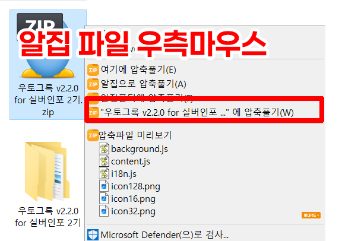
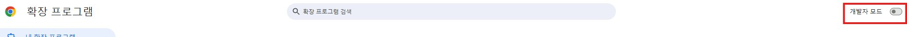
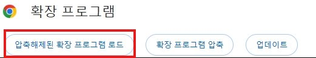
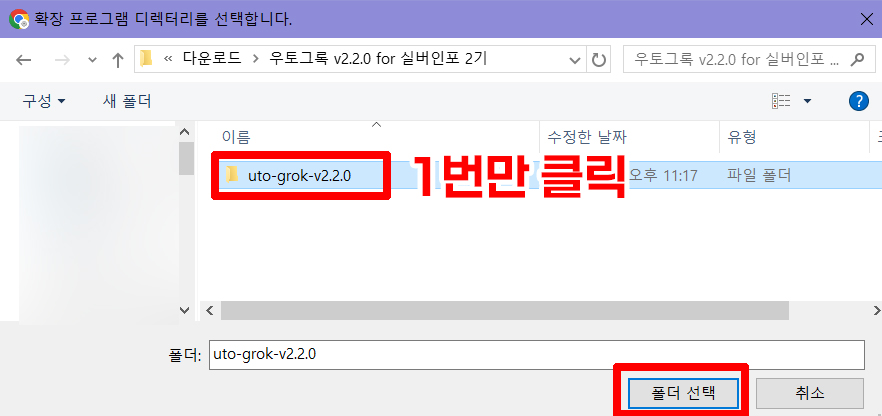
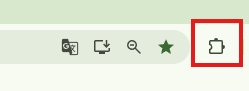
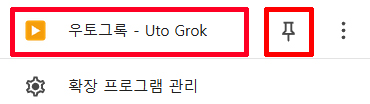

🎬 우토그록
v4.0.0 · 크롬 확장 프로그램
⬇ 다운로드📋 설치 순서
- 받은 zip 파일에 마우스 오른쪽 → "~에 압축풀기"

- 크롬 주소창에
chrome://extensions입력하고 엔터 - 오른쪽 위 개발자 모드 켜기

- 왼쪽 위 "압축해제된 확장 프로그램 로드" 클릭

- 압축 푼 폴더를 1번만 클릭(더블클릭 X) → 폴더 선택

- grok.com/imagine 접속 → 오른쪽 위 퍼즐 모양 누르고 우토그록 클릭


📌 옆의 핀을 눌러두면 다음부터는 툴바에서 바로 누를 수 있어요. - 신청 화면에서 성함 / 닉네임 / 강의명 입력 → 관리자 승인 후 사용 (실버인포롱폼 수강생은 해당사항 없음)